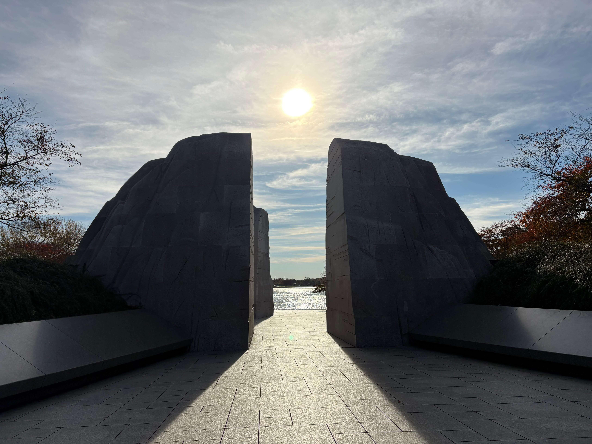

Martin Luther King, Jr. Memorial
Washington, DC · United States
Located along the Tidal Basin in Washington, DC, the Martin Luther King, Jr. Memorial honors the life, achievements, and enduring legacy of one of the most influential leaders of the American civil rights movement. Opened to the public in 2011, the memorial commemorates Dr. King's commitment to equality, justice, and nonviolent social change. Its centerpiece is an impressive stone sculpture of Dr. King, known as the Stone of Hope, emerging from a larger formation called the Mountain of Despair. The design draws inspiration from his famous "I Have a Dream" speech and incorporates inscriptions featuring some of his most memorable words.
Surrounded by a peaceful landscape and overlooking the Tidal Basin, the memorial offers visitors a place for reflection and remembrance. It also stands as a tribute to the generations who worked for civil rights and equal opportunities in the United States. These photographs capture my visit to this meaningful landmark and its powerful atmosphere in the heart of Washington, DC.
My Photo Gallery
Explore my personal travel photographs and memories from the Martin Luther King, Jr. Memorial, including its striking sculpture, meaningful inscriptions, and peaceful setting along the Tidal Basin.
View All Photos ↗